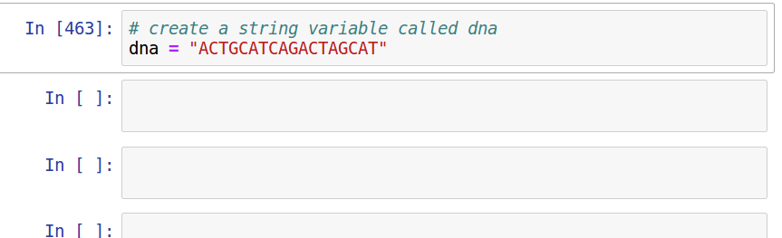

EEEB GU4055
1. Review notebook assignments: Python introduction.
2. Discuss the assigned reading.
3. Introduce new topic: Scientific Python.
"I got stuck on a problem in the assignment, am I going to fail?"
No, if you make it clear you ran the
notebooks and made an effort to find answers (submit your code
with errors, include comments on what you tried) you will get full
points. We will go over everything in class. Also, visit the chatroom!
These first few weeks are like a crash course in coding so that we can do exciting things later using these skills. We will turn soon to much stronger focus on genomics and just start recycling these coding skills each week.
Python objects.
# Create objects of various types using their type conventions
"a string"
["a", "list", "of", "strings"]
("a", "tuple", "of", "strings")
{"a key": ["and value in a dictionary"]}
# Or, we can explicitly use the object type function to creating objects
str("Columbia")
list((1, 2, 3, 4, 5))
tuple("apple", "banana", "orange")
dict([("a", 3), ("b", 4), ("c", 5)])
Creating variables to store objects
# Create objects of various types using their type conventions
a = "a string"
b = ["a", "list", "of", "strings"]
c = ("a", "tuple", "of", "strings")
d = {"a key": ["and value in a dictionary"]}
# Or, we can explicitly name the object type as a function
a = str("Columbia")
b = list((1, 2, 3, 4, 5))
c = tuple("apple", "banana", "orange")
d = dict([("a", 3), ("b", 4), ("c", 5)])
The string object type
# Wrap any text in single or double quotes to create a string
a = "a string"
b = 'another string'
c = "A very long string ....................."
DNA = "ACGCAGTCGATGCTAGCTAGCTGACTGATCGTA"
The integer and float object types.
# numeric values (ints or float)
a = 0
b = 10
c = 3300.239291
d = 0.0000301
Challenge 1:
In a code cell below write three lines of Python code.
On line 1 create a new variable called 'y' with the value 30.
On line 2 create another new variable 'z' with the value 5.5.
On line 3 use the print function to print the value of y / z.
(See Chapter 3 if you need help).
y = 30
z = 5.5
print(y / z)
5.454545454545454
A function is a program
that perform a task. Functions end in parentheses.
Example:
the len()
function returns the length of an object.
# Create a string
DNA = "ACTACTACTACTACTACTAC "
# return the length of the string
len(DNA)
20
Object-oriented:
everything is an object.
It is hard to remember all of the
functions in a language, and which type of objects each function is
designed to operate on. To make life easier, the functions
that operate on a specific object (e.g., a string) are accessible
from the object itself.
# Create a string
DNA = "ACTACTACTACTACTACTAC"
# access functions for string objects from the string object
DNA.lower()
"actactactactactactac"
The interactive nature of Python in jupyter. Use [tab]-completion to view attributes/functions of objects. Easier than memorizing!
Indexing and slicing using brackets
# Select subsets of an object by their position (starting at 0)
DNA = "ACTACTACTACTACTACTAC"
DNA[0]
"A"
DNA = "ACTACTACTACTACTACTAC"
DNA[1:5]
"CTAC"
Challenges 2-3:
Use indexing to return only the first 10 characters of dna; and
only the last 5.
(See Chapter 3.1.2 if you need help)
dna = "ACGCAGACGATTTGATGATGAGCATCGACTAGCTACACAAAGACTCAGGGCATATA"
dna[:10])
"ACGCAGACGA"
dna[-5:])
"ATATA
Challenge 4: Use the split() function to split the dna variable on the characters "CG". Store the return values to a new variable called dnalist. Then use print on that variable to show its values.
# the dna string variable
dna = "ACGCAGACGATTTGATGATGAGCATCGACTAGCTACACAAAGACTCAGGGCATATA"
# call split with the argument "CG" and store results as dnalist
dnalist = dna.split("CG")
# print to show the value of dnalist
print(dnalist)
['A', 'CAGA', 'ATTTGATGATGAGCAT', 'ACTAGCTACACAAAGACTCAGGGCATATA']
Challenge 5: In the cell below create two new variables, one called fiveprime that contains the first ten 10 elements in dnalist, and another called threeprime that contains the last 10 elements in dnalist.
# the dna string variable
dna = "ACGCAGACGATTTGATGATGAGCATCGACTAGCTACACAAAGACTCAGGGCATATA"
# make dna string into a list object
dnalist = list(dna)
# index the first ten items and store as fiveprime
fiveprime = dnalist[:10]
# index last ten items and store as threeprime
threeprime = dnalist[-10:]
Indentation in Python has meaning, where nested lines are influenced by the less indented lines above them. For example, a for-loop.
# format: for each item in container of items do x with item
for letter in "aeiou":
print(letter)
"a"
"e"
"i"
"o"
"u"
Conditional statements include code that only runs if something is True or False. The special keyword if is used here.
# for item in container of items do x with item if it's the right kind.
for letter in "aeiou":
if letter == "a"
print(letter)
"a"
Challenge 6: Count number of differences between dna1 and dna2. Hint, create an integer variable set to 0 and add 1 to it for each difference. Iterate through each object comparing items. You may find that using the `range` function and indexing the objects is easiest. (See Chapter 4.3).
# the two string objects
dna1 = "AACTCGCTAAAGCCTCGCGGATCGATAAGCTAG"
dna2 = "AAGTCGCTAAAGCAACGCGGAACGATAACCTGG"
# Hint 1: create an integer variable set to 0
diffs = 0
# Hint 2: use the range function and index each object while iterating
for idx in range(len(dna1)):
dna1_value = dna1[idx]
dna2_value = dna2[idx]
if dna1_value != dna2_value:
diffs += 1
6
Functions are used to perform a repeated task. As we said there are many functions available in Python. In addition, you can write your own by using def()
# a function to add 100 to x
def myfunc(x):
return x + 100
# run the function on an input value (e.g., 200)
myfunc(200)
300
Functions are used to perform a repeated task. As we said there are many functions available in Python. In addition, you can write your own by using def()
# name the function and the arguments anything you want
def sumfunc(arg1, arg2):
summed = arg1 + arg2
return summed
# run the function
myfunc(200, 300)
500
Challenge 7: Describe this function.
def base_frequency(string):
"returns the frequency of A, C, G, and T as a list"
freqs = []
slen = len(string)
for base in "ACGT":
freqs.append(string.count(base) / slen)
return freqs
# test the function
base_frequency("ACACTGATCGACGAGCTAGCTAGCTAGCTGAC")
[0.28125, 0.28125, 0.25, 0.1875]
Challenge 8: Write an alternative implementation of base_frequency()
def base_frequency(string):
"returns the frequency of A, C, G, and T as a list"
total_len = len(string)
freqA = string.count("A") / total_len
freqC = string.count("C") / total_len
freqG = string.count("G") / total_len
freqT = string.count("T") / total_len
return [freqA, freqC, freqG, freqT]
# test the function
base_frequency("ACACTGATCGACGAGCTAGCTAGCTAGCTGAC")
[0.28125, 0.28125, 0.25, 0.1875]
Importing libraries: the random library
import random
# generate one random number between 0 and 10
random.randint(0, 10)
# return a list of 10 random numbers
[random.randint(0, 10) for i in range(10)]
[0.28125, 0.28125, 0.25, 0.1875]
Challenge 9: Write a function using random to generate a random sequence of DNA (As, Cs, Gs, and Ts) of a length that is supplied as an argument. It should return the results as a string object. Demonstrate by generating a 20 base pair long sequence of DNA.
def random_dna(length):
"returns a random string of ACGTs of len length"
dna = ""
for i in range(length):
dna += random.choice("ACGT")
return dna
# test it out
random_dna(20)
"AGGTTTTACCGGTATGAGTC"
The things we did with bash code in the first tutorial can all be run in Python as well.
%%bash
mkdir -p datafiles/
wget http://eaton-lab.org/data/40578.fastq.gz -q -O datafiles/40578.fastq.gz
wget http://eaton-lab.org/data/iris-data-dirty.csv -q -O datafiles/iris-data-dirty.csv
# make a new directory
os.makedirs("datafiles2", exist_ok=True)
# download files to that directory
url1 = "http://eaton-lab.org/data/40578.fastq.gz"
with open("./datafiles2/40578.fastq.gz", 'wb') as ffile:
ffile.write(requests.get(url1).content)
url2 = "http://eaton-lab.org/data/iris-data-dirty.csv"
with open("./datafiles2/iris-data-dirty.csv", 'wb') as ffile:
ffile.write(requests.get(url2).content)
Writing to files in Python.
# open a file object in write-mode
ofile = open("./datafiles/helloworld.txt", 'w')
# write a string to the file
ofile.write("hello world")
# close the file object
ofile.close()
# a simpler alternative: use 'with', 'as', and indentation
with open("./datafiles/helloworld.txt", 'w') as ofile:
ofile.write("hello world")
Reading data from files in Python
# open a file object in read-mode
infile = open("./datafiles/helloworld.txt", 'r')
# call the read or readlines function to get the data.
data = infile.read()
# close the file object
infile.close()
# a simpler alternative: use 'with', 'as', and indentation
with open("./datafiles/helloworld.txt", 'r') as infile:
data = infile.read()
Challenge 10: Use random function to generate a DNA sequence, and combine it with "> name" to make a valid fasta formatted DNA sequence. Then write it to a file.
# create a fasta formatted DNA sequence
dna = random_dna(20)
name = "> sequence name"
fasta = name + "\n" + dna
# write it to a file
with open("datafiles/sequence.fasta", 'w') as out:
out.write(fasta)
# print fasta for demonstration
print(fasta)
> sequence name
CACGAATGCGTAATCTTATC
Challenge 11:
Write function to convert fastq to fasta. (1) Write a function;
(2) read 'datafiles/40578.fastq.gz' from disk;
(3) convert to fasta format; and (4) write result to a file
Trick: use print for debugging.
# 1. write a function
def converter(fastq_file):
# 2. read in the fastq file
with gzip.open(fastq_file, 'rb') as indata:
fastq = indata.read().decode()
# 3. convert to fasta: start with an empty list
fastadata = []
# split file into separate reads on @ delimiter
reads = fastq.split("@"):
for read in reads:
# split read into 4 lines
lines = read.split("\n")
# join ">", line[0], and line[1] to make fasta formatted sequence
fastadata.append("> " + lines[0] + "\n" + lines[1])
# join strings in the list back together into a string
fasta = "\n".join(fastadata)
# write to a file
with open("datafiles/sequence.fasta", 'w') as out:
out.write(fasta)